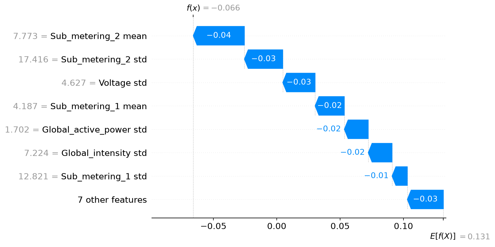
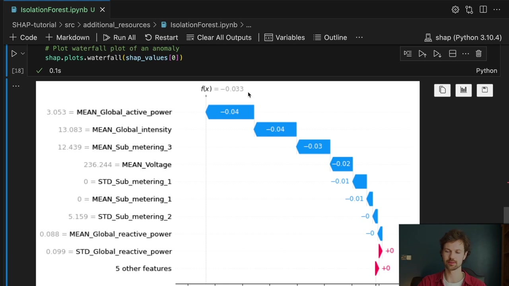
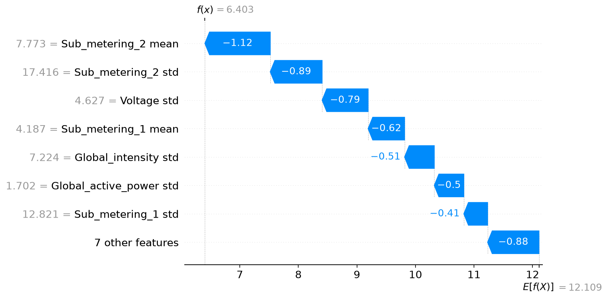

Explain Isolation Forest Anomalies with SHAP
Companion to A Data Odyssey’s video · Conor O’Sullivan
SHAP does not require a supervised target. It needs an input-to-output function that we want to explain. An anomaly detector supplies such a function: it maps an observation to a score describing how unusual that observation looks to the fitted model.
The playlist uses Isolation Forest and household electricity measurements. We will follow that application, paying particular attention to a detail that changes the interpretation of every bar: whether we explain the detector’s decision score or its average isolation path length.
Why short paths suggest an anomaly
An isolation tree repeatedly selects a feature and a split at random. Each split divides the observations into smaller groups. A point far from the main concentration of data often becomes isolated after only a few splits. A point in a dense region usually needs more splits before it stands apart.
A single random tree can isolate an ordinary point unusually early by chance. An Isolation Forest averages information across many trees to reduce that randomness. Shorter average paths suggest that an observation is easier to separate from the rest of the data.
Practical implementations limit tree depth. If a leaf still contains several training observations, the path calculation includes an estimated extra length needed to isolate an observation inside that leaf. We will therefore refer to the corrected average path length, rather than just counting the visible split nodes.
Make one row represent one day
The UCI household dataset contains minute-level readings for one household. The seven numerical measurements include active power, voltage, current, and three submeter readings. Following the video, calculate each measurement’s daily mean and standard deviation. Seven measurements times two summaries gives 14 features per day.
The mean describes a day’s average level. The standard deviation describes how much the readings varied within the day. A day can look unusual because its average is high, because its variation is unusual, or because several summaries form an uncommon combination.
The supplied script converts question marks to missing values and drops incomplete readings before aggregation, leaving 1,433 daily rows. This reproduces the video’s basic preparation. Missingness can itself be informative, and days have unequal retained coverage; those are limitations of this simple representation.
Fit on earlier days, inspect later days
Our example fits on the first 1,003 days and evaluates the remaining 430, starting on 16 September 2009. This chronological split differs from the video’s full-dataset fit and keeps later observations out of training. It is still a simple daily model: it does not explicitly learn seasonal patterns or use a sequence of previous days as input.
from sklearn.ensemble import IsolationForest
model = IsolationForest(
n_estimators=100, max_samples=256,
contamination=0.02, random_state=42, n_jobs=2,
)
model.fit(train)
decision = model.decision_function(test)
flagged = decision < 0The contamination setting selects a threshold based on the training scores. It does not assert that exactly 2% of future days will be flagged, or that flagged days are confirmed faults. In our run, six of the 430 later days fall below the threshold. We have no verified anomaly labels with which to call those six true positives.
Explain the decision score with Kernel SHAP
Scikit-learn’s decision_function has a convenient threshold: negative values are flagged, while nonnegative values are on the normal side. A negative SHAP contribution to this output pushes a day toward the anomaly threshold; a positive contribution pushes it away.
To explain that exact quantity, pass a callable returning it to Kernel SHAP. The wrapper below restores the feature names because the explainer may call the model with an array.
def decision_output(values):
frame = pd.DataFrame(values, columns=train.columns)
return model.decision_function(frame)
background = train.sample(n=40, random_state=42)
explainer = shap.KernelExplainer(
decision_output, background, link="identity"
)
np.random.seed(42)
phi = explainer.shap_values(
rows, nsamples=512, l1_reg=0, silent=True
)
np.testing.assert_allclose(
explainer.expected_value + phi.sum(axis=1),
model.decision_function(rows), atol=1e-6,
)Here rows contains six selected test days: the three lowest-scoring days and three normal days near the middle of the normal-score range. This selection keeps the demonstration bounded; it is not a representative sample for estimating global feature importance.
For 4 November 2010, the reference decision score is about 0.1315 and the explained score is −0.0659. Contributions therefore sum to approximately −0.1974, moving the day from the reference toward the flagged side.


The source video uses the same sign convention. Its lowest decision scores are anomalies, so blue negative bars can be the most relevant bars when investigating an alert. Color alone does not mean good or bad; the selected output gives it meaning.


Kernel SHAP estimates the allocation from sampled feature groups. The reconstruction check verifies the endpoint but not the precision of every bar. Before acting on a close ranking, repeat the calculation with a larger sample budget and inspect how the individual contributions change.
Tree SHAP explains a different output here
The specialized tree adapter can explain this Isolation Forest much more directly. In the tested SHAP version, its raw output is the corrected average path length. It is not the decision_function score. The SHAP implementation’s IsoTree adapter constructs this path-length output.
tree_explainer = shap.TreeExplainer(
model, feature_perturbation="tree_path_dependent"
)
tree_values = tree_explainer(test)
path_length = (
tree_values.base_values + tree_values.values.sum(axis=1)
)For the same 4 November day, our tree explanation starts at a path-length baseline of about 12.1093 and ends at 6.4029. A negative contribution now means a shorter path: the day becomes easier for the forest to isolate. There is no zero anomaly threshold on this scale.


The script independently reconstructs the corrected path length from score_samples and checks the match. For this implementation, if $h$ is that path length and $c$ is the normalization for the tree sample size, the decision score is $-2^{-h/c}-\text{offset}$. This is a nonlinear transformation, so transforming each path contribution separately would not produce decision-score SHAP values.
This example captures a general lesson from the whole series: before interpreting a contribution, name the output it belongs to. Two legitimate explainers can produce different numbers because they explain different functions or use different reference rules.
Use interactions to decide what to inspect next
For this supported tree setup, SHAP can also return an interaction matrix for each row. Diagonal entries represent main effects; off-diagonal entries allocate pairwise interaction effects. The entries across a row of the matrix sum to that feature’s ordinary SHAP value.
The off-diagonal matrix is symmetric. A feature pair appears in two positions, with half of the pair contribution in each. Count both entries when calculating the pair’s total, and avoid accidentally doubling it again.
Our script checks this matrix-to-contribution identity and generates an interaction heatmap for the six selected days. Its average absolute entries indicate patterns worth inspecting in those six cases. They do not establish that a particular appliance caused a fault.

Turn the explanation into an investigation
If a submeter’s mean and standard deviation receive large negative contributions, look at that day’s actual readings. Compare the daily profile with suitable reference days. Check whether a few unusual minutes, a sustained change, missing readings, or seasonal differences explain the summary values.
That is the practical role of the explanation: it directs attention toward the inputs that account for the detector’s score. Domain evidence is still needed to decide whether the day represents a problem and what action would help.
The recorded results include the selected dates, background size, sampling budget, output values, and verification error. Across the series, the process has stayed consistent: define the comparison, compute contributions to a named output, verify the arithmetic, then interpret the result in the context of the actual rows.